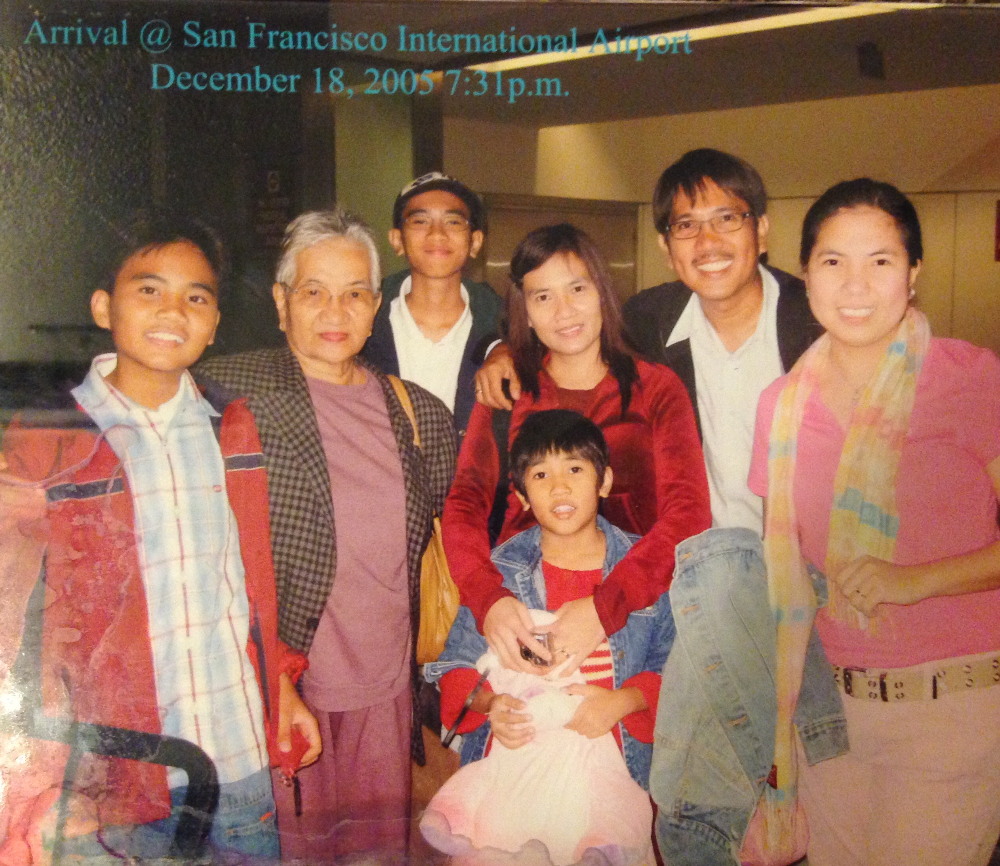
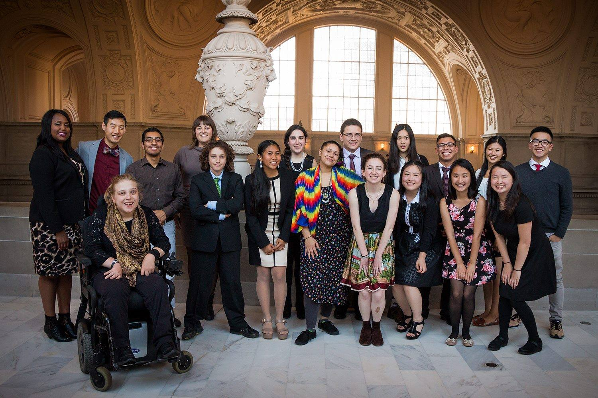

What is my story?
The organizations, people and values that shape me.
When I was two years old, my mom immigrated from the Philippines to the U.S. Both my parents believed that my siblings and I could have access to better education, better careers, and simply put, better lives in the US. And now looking back, 21 years later, I can only imagine what it must have been like for my mom to have to build a life and career in a new place without much family or friends. After working multiple back-to-back jobs for six years, my mom and dad found a way to petition for the rest of us to live with her as immigrants in San Francisco. In December 2005, we moved to the Tenderloin, “one of the most ethnically diverse and poorest neighborhoods in the city” on paper, but to me it was and will forever be home.

Despite my family being whole again, our joy was short-lived. My parents started working longer hours; I only saw them in the morning before school started and around 9 or 10 PM when they got back from work. There wasn’t much time to catch up about our days or get homework support. I knew they worked as hard as they did for my siblings and I so that we could have food on the table, a roof over our heads and other necessities. I’m grateful for their sacrifices which influenced me to do my best in my academics and extracurriculars. In the back of my head, I had this expectation that if my parents were working hard, I should too.
Little did I know then that becoming an immigrant meant slowly letting go of my roots as a Filipina. It started off with my language. I spoke English in school and brought it home because I wanted to practice talking and sounding American to prevent getting bullied from my thick Tagalog accent. Gradually, people could no longer hear my accent and I started forgetting Tagalog words. As time went on, I also spoke less and less with my family and friends in the Philippines. Our lives were different and I didn’t know how to sustain our relationships from 8,000+ miles away. Even though I was abroad, I knew that my family and friends from back home will always be family, and that reassured me to focus on my life in the U.S.
My mom is an entrepreneur who co-manages and runs the business she bought with my dad. She bought Aeroskin Worldwide, a manufacturing company for water sports, in 2007 from her former boss and they’ve run our family’s small business since then right by Downtown San Francisco. Ever since I was young, Aeroskin has been my family’s most consistent topic of conversation. As a result, the idea of building up an organization from scratch has excited and shaped my interests and involvements.
My dad is a Community Organizer in the Tenderloin. He works with residents, nonprofits and local officials to bring more affordable housing, accessible & healthy foods, and holistic services for the homeless in our neighborhood. Similar to my mom, he also embodies the entrepreneur spirit. He’s founded many resident-based organizations like the Tenderloin Filipino Community Association and the Filipino Community Development Corporation. Both organizations bring together the Filipino community to organize cultural events, fight for housing rights for tenants, and secure affordable housing for low-income folks. Oftentimes in high school, my dad invited me to his meetings, encouraged me to participate and asked me for my opinions and feedback. Through those meetings and our conversations, I thought about how I could serve my community starting with the Tenderloin Boys & Girls Club (BGC).

Local Activism in High School
I started my local activism through the Tenderloin BGC. I joined their Keystone Club, a leadership organization for high school students. Together, we planned, organized and participated in community service events. Everything about Keystone was giving back. I met my lifelong mentors and friends through the club. This was the community that pushed me to apply my skills to make an impact and also supported me in the challenges I faced at home and at school.
When I was a senior in high school, I joined the Youth Commission, a group of youth that advised the Board of Supervisors and the Mayor on policies and laws related to young people. It was my opportunity to address youth issues in my own District on a citywide level. I organized a Youth Forum in the Tenderloin and invited various youth organizations to identify the challenges they faced in our neighborhoods. We explored topics in cleanliness, homelessness, youth activism, etc. and gave every group the opportunity to share their insights and recommendations. Our District Supervisor and Police Captain was there to listen and participate. This event and my role as a Youth Commissioner remind me to center my work around the people who I’m serving.

My local activism opened doors for me to do international work through the World Food Prize. After graduating high school, I travelled to India on an internship to conduct research on how microfinance was used in rural communities. By meeting women in the Self-Help Groups (SHGs), I learned how microfinance elevated their family and community. These SHGs received small loans that women spent on their families and businesses. They held each other accountable and supported one another to repay back the loan in a timely manner. The most eye opening lesson I learned from these women was the sense of empowerment they developed from managing their own finances. In the village I visited, women were expected to be caretakers, cooks, and housewives. They’re discouraged financially from supporting their families because that was their husband’s job. Microfinance and the community that SHGs built changed that narrative for them. Being in a new country and working on a thesis with my mentors challenged me to center my observations and research on the women that I met. This internship also taught me the importance and privilege that comes with traveling. I learned so much about myself like the values that grounded me and the beauty of learning and sharing cultures.
Make an Impact
When I came back from India, I had a week until I started college at UC Berkeley. I was excited to learn and apply what I learned. However, my classes were not what I expected. I came in as an Applied Math major because Calculus was my favorite subject in high school, but my college math classes became my least favorite classes. Ironically, I didn’t see how the concepts we learned were applicable to my everyday life. I also learn the best when working with people, but it was challenging to find those people in my classes. Most of my classmates in my math classes worked siloed and when I asked them for help, I felt judged by not knowing the answer. I started to feel imposter syndrome and being one of the only Filipina women in my Math classes didn’t help alleviate those feelings.
By the end of Freshman year, I decided to apply to the Business major. I wanted to learn concepts and material that I can apply towards solving problems I cared about. I was also interested in combining the lessons I learned from both of my parents in their careers as an Entrepreneur and Community Organizer. Although I found lower-division Business courses more applicable than my Math courses, my grades started to slip because of all of my other involvements. Throughout college I worked part-time jobs and internships to pay for my education. I promised my parents that I would pay for all my college expenses. Money was always tight for my parents, and I didn’t want to burden them with any more financial stress. They also advised against me using loans because they didn’t want me to get in the habit of borrowing more than I needed. So, I worked 20-30 hours/week to afford my books, rent, groceries, etc.
Working my part-time internships became a necessity, but I also started to enjoy them because of the impact I had. In one of my internships, I worked on a data project with a nonprofit from the Tenderloin. They collected data using pen & paper and Microsoft Excel; their data was not centralized. By the end of my project, I worked with them to centralize their data and translate it to the app they were starting to build. Unlike my classes, my internships allowed me to apply what I learned towards impact. This relevancy was a missing piece from my Berkeley undergrad education.
Not only was I working on a part-time basis, but I also co-founded a student organization called the Invention Corps of Berkeley (ICB) starting the fall of my Sophomore year. ICB connects teams of diverse Berkeley students with graduate & PhD students, nonprofits, startups and foundations to collaborate on projects that are addressing problems related to poverty, health, environment, and society. I became deeply invested in building ICB because I was frustrated by the lack of relevancy and applicable skills I was not learning from my classes. I channeled my frustration into growing ICB and providing opportunities for students in similar shoes as myself.
During the spring of my junior year, I took a break from school to work a full-time internship at Twitter as a Public Policy Fellow. My mentor passed on the job opportunity to me during the fall and I thought it was perfect timing. It was an exciting role because I would work and learn directly from the team that led initiatives to serve the Tenderloin and South of Market communities in San Francisco. At that point, I was also undeclared and I switched majors twice from Applied Mathematics to Business to Cognitive Science. I needed a change of environment especially because my mental health and self-confidence took a toll when I didn’t get into the Business major. Plus, I was struggling heavily to connect my studies with my passion and interests which started to show in my academic performance.
I didn’t know it then, but taking a semester-off was one of the best decisions I made in undergrad because it made me redefine what higher education meant for me. Before, I believed that receiving a college education meant that we should apply what we learned from our classes right away. For example, my decisions to continue my part-time internships and to lead ICB stemmed from me wanting to use my education to make an impact and applying myself right away. After I finished my internship, I reframed my perspective of higher education from “applying the lessons I learned in college now” to “it’s okay if we use this skill or information later in life”. This new perspective led me to feel rejuvenated and ready to finish my senior year on a strong note.
Senior year was both intense and rewarding. I took 20+ units each semester and worked a part-time internship at the Kapor Center, an organization with a mission to diversify the tech and entrepreneurship sectors. I stepped down from leadership positions in ICB and other extracurricular activities and focused my time outside the Kapor Center on my academics. My days generally went from 9 AM to 12 AM with about two-three hour breaks in total. I treated every day with intense focus. My new sense of appreciation for college, gained from taking a semester-off, motivated me to persevere through my toughest days. Not only did I learn a lot, but I was extremely proud of myself for passing all my classes and securing a full-time job before graduating.
A week after graduating, I worked with Make School as an Executive Assistant/Special Projects. Make School is a college that offers a Bachelor’s in Applied Computer Science in 2-2.5 years using project-based, industry relevant curriculum all without requiring upfront tuition. I loved how they were redefining what and how a college education was. It was the perfect place for me to thrive in because I would work and learn directly from one of the co-founders and collaborate with all of the teams. I also got the opportunity to work on projects with students, have visibility on our priorities as an executive team, and support various initiatives from accreditation to student growth. On top of that, I developed stronger organization and communication skills which I’ll bring to my future careers.
What's Next?
Sharing my immigration story to the start of my full-time career is key in understanding the organizations, people and values that have shaped me. The common thread that connects all of my involvements is my commitment in using my skills for impact and pursuing opportunities that’ll allow me to grow. I’m thrilled that a career in teaching is what’s next for me. I share all that and more below: